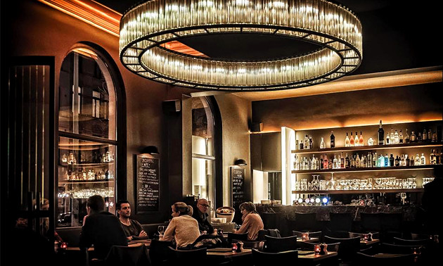

Loading Antwerp Discover…
Swipe through the city's best spots with hand gestures. 👍 to like, 👎 to dislike. Collect up to 6 favourites — and we'll snap your reaction for each one!
Grant camera access for hand gesture detection & reaction photos

Here are the places you loved
⚠ Real-time busyness data requires a Google Maps Platform Popular Times API key. This demo simulates typical Friday evening patterns for Antwerp neighbourhoods.
No photos taken — camera access was required.